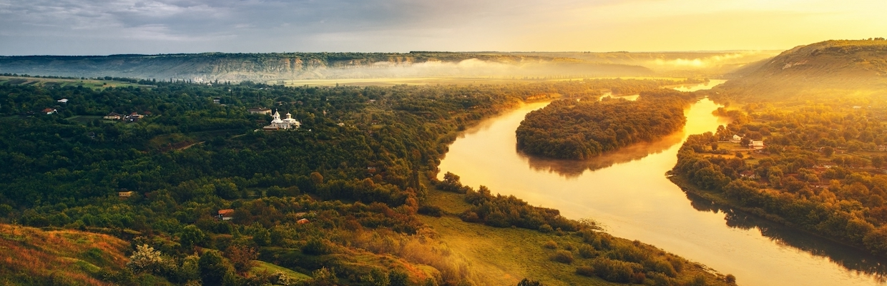
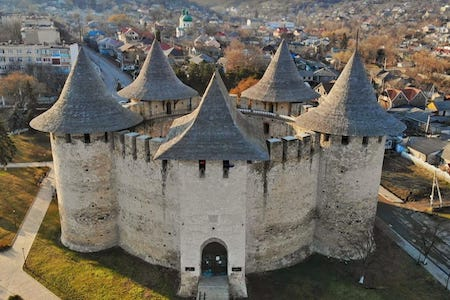
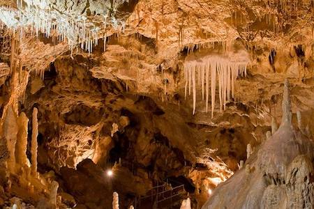
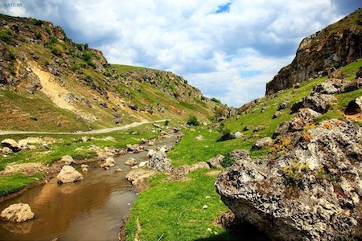
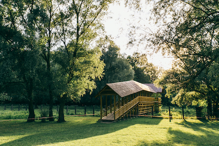
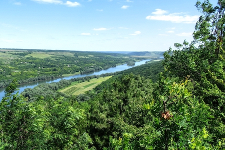
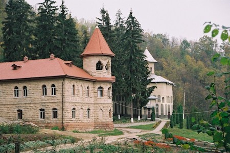
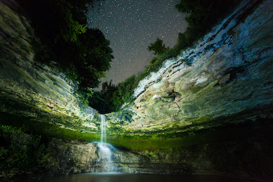
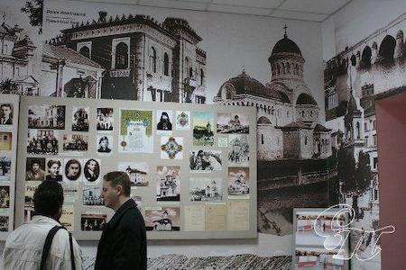
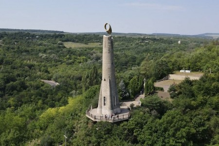

Nordul Moldovei

Nordul Republicii Moldova este o regiune bogată în istorie, natură şi tradiţii autentice. Aici se întâlnesc peisaje variate, de la dealuri domoale până la văi spectaculoase ale râului Nistru. Zona este cunoscută pentru cetăţi medievale impresionante şi monumente istorice valoroase. Satele din nord păstrează un mod de viaţă tradiţional, cu obiceiuri transmise din generaţie în generaţie. Natura este foarte diversă, incluzând păduri, rezervaţii şi formaţiuni geologice unice. Vizitatorii pot descoperi locuri liniştite, ideale pentru relaxare şi explorare. De asemenea, regiunea oferă experienţe culturale autentice şi ospitalitate locală caldă. Nordul Moldovei este potrivit atât pentru iubitorii de istorie, cât şi pentru cei pasionaţi de natură. Atracţiile turistice sunt variate şi accesibile în toate anotimpurile. Această parte a ţării păstrează un farmec aparte, diferit de restul Moldovei.
Explorează locaţiile din Nordul Moldovei
Cetatea Soroca

Construită strategic pe malul Nistrului, cetatea are o formă circulară rar întâlnită în Europa de Est. Rolul ei principal a fost apărarea graniţelor medievale ale Moldovei. Zidurile groase şi turnurile perfect conservate arată importanţa sa militară. Interiorul permite explorarea modului în care trăiau apărătorii cetăţii. Fiecare segment al construcţiei are o funcţie defensivă bine gândită. Istoria ei este legată de campaniile lui Ştefan cel Mare. Astăzi este un obiectiv turistic important şi educativ. Cetatea rămâne un exemplu clar de arhitectură militară medievală.
Peştera Emil Racoviţă

Peştera este considerată unul dintre cele mai mari sisteme subterane din regiune. Galeriile sale se întind pe kilometri întregi, formând un labirint natural complex. Structura sa a fost creată prin procese geologice de-a lungul milioanelor de ani. Pereţii sunt acoperiţi cu formaţiuni de calcar interesante. Explorarea se face doar însoţită de ghid specializat. Mediul interior este complet diferit de cel de la suprafaţă. Cercetătorii o folosesc şi pentru studii ştiinţifice. Este un exemplu important de patrimoniu natural subteran.
Defileul Trinca

Relieful zonei este format din pereţi abrupţi şi straturi geologice vizibile. Aceste formaţiuni oferă informaţii despre evoluţia Pământului în regiune. Zona este mai puţin influenţată de activitatea umană. Vegetaţia este adaptată condiţiilor de teren stâncos. Traseele nu sunt foarte amenajate, ceea ce păstrează caracterul sălbatic. Este folosit şi în scopuri educaţionale pentru geologie. Fotografiile realizate aici evidenţiază structura spectaculoasă a rocilor. Defileul este valoros din punct de vedere ştiinţific.
Rezervaţia Pădurea Domnească

Rezervaţia este cunoscută pentru ecosistemul său forestier complex. Aici se întâlnesc specii rare de animale protejate. Un element unic este prezenţa zimbrilor reintroduşi în habitat natural. Pădurea are zone umede, lacuri şi păduri de luncă. Este un spaţiu important pentru cercetare ecologică. Traseele sunt utilizate pentru studii şi observaţii. Managementul zonei este strict pentru conservarea naturii. Rezervaţia are rol major în biodiversitatea Moldovei.
Rudi-Arioneşti

Acest complex arheologic include un sit vechi situat într-o zonă naturală spectaculoasă. Cercetările au scos la iveală urme de locuire din perioade foarte vechi. Relieful din jur a influenţat modul în care a fost folosit spaţiul de-a lungul timpului. Zona este importantă pentru studiile istorice şi arheologice din nordul Moldovei. Descoperirile de aici oferă informaţii despre viaţa comunităţilor timpurii. Accesul este relativ izolat, ceea ce a ajutat la păstrarea sitului. Natura din jur rămâne aproape neatinsă. Este un punct valoros pentru cercetare şi patrimoniu.
Mănăstirea Rudi

Ansamblul monahal a fost construit într-o zonă izolată de pădure. Arhitectura reflectă stilul religios tradiţional moldovenesc. Comunitatea monahală a menţinut activitatea spirituală de-a lungul timpului. Documentele istorice atestă importanţa sa regională. Zona a fost aleasă pentru retragere şi meditaţie. Clădirile sunt integrate natural în peisaj. Aici se păstrează obiecte religioase vechi. Este un sit important pentru istoria religioasă locală.
Saharna

Situată într-o vale spectaculoasă de pe malul Răutului, această zonă combină perfect natura cu spiritualitatea. Stâncile abrupte şi cascadele creează un peisaj impresionant. Mănăstirea din apropiere adaugă o atmosferă liniştită şi spirituală locului. Vizitatorii pot explora trasee care duc prin defileuri şi puncte de belvedere. Fiecare anotimp schimbă complet aspectul zonei, oferind mereu o experienţă diferită. Locul este frecvent vizitat de turişti şi pelerini. Legendele locale adaugă un plus de mister. Saharna este una dintre cele mai frumoase destinaţii naturale din nord-estul Moldovei.
Muzeul de Istorie şi Etnografie Bălţi

Expoziţiile muzeului sunt organizate cronologic şi tematic. Colecţiile includ obiecte din diferite perioade istorice. Accentul este pus pe evoluţia regiunii de nord. Sunt prezentate şi artefacte etnografice autentice. Instituţia are rol educativ pentru comunitate. Activităţile includ expoziţii temporare şi evenimente culturale. Muzeul colaborează cu instituţii academice. Este un centru important de cercetare locală.
Lumânarea Recunoştinţei

Monumentul este dedicat culturii şi limbii române, fiind amplasat pe o colină înaltă. Forma sa verticală simbolizează ideea de lumină şi memorie colectivă. Urcarea scărilor până sus este o experienţă fizică şi vizuală în acelaşi timp. De la înălţime se poate observa cursul Nistrului şi oraşul Soroca. Proiectul a fost gândit ca un omagiu adus personalităţilor marcante. Arhitectura simplă accentuează mesajul simbolic. Locul este frecvent vizitat de elevi şi turişti. Reprezintă un punct important de identitate culturală.